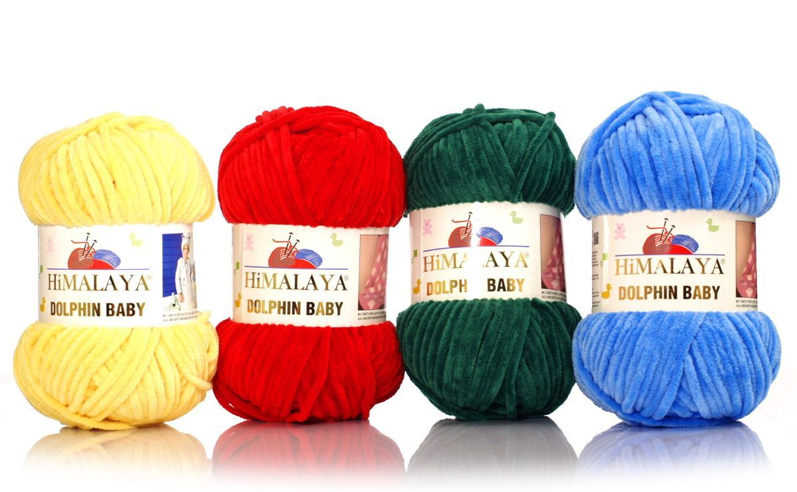
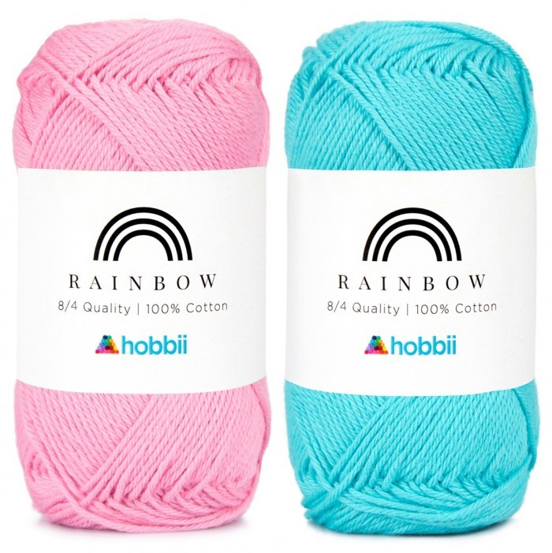

Rodzaje Włóczek
Tabela poniżej przedstawia kilka popularnych rodzajów włóczek, które są idealne do szydełkowania:
| Nazwa Włóczki | Skład | Grubość | Kolor |
|---|---|---|---|
| Włóczka Akrylowa | 100% Akryl | Średnia | Różnorodne |
| Włóczka Wełniana | 80% Wełna, 20% Akryl | Gruba | Naturalne odcienie |
| Włóczka Bawełniana | 100% Bawełna | Cienka | Pastelowe kolory |
Polecane Stony Do Zakupu Włóczek
Polecane Włóczki
-
Włoczka Himalaya Dolphin Baby - Idelana do robienia pluszaków,kocyków oraz poduszek (koszt około 16zł za 1 motek)
Skład 100% - Poliester
 -
Rainbow Cotton - Idealna do tworzenia ubrań,ubranek dla dzieci,poszewek,ścierek i innych projektów (koszt około 13zł za 1 motek)
Skład 100% - Bawełna
